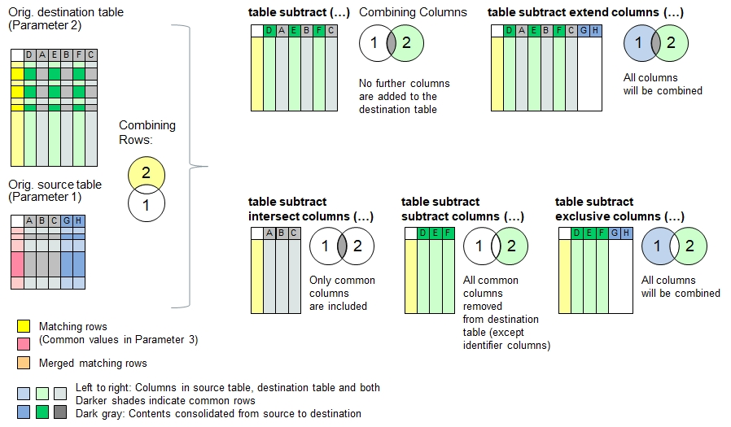

Function Names
table subtract, table subtract extend columns, table subtract subtract columns, table subtract columns, table subtract exclusive columnsDescription
The functions described here subtract the contents of the source table from the destination table. Identifier columns can be defined for both tables in order to
identify the overlapping table rows (e.g. same first and last names).
For all rows which share the same information in the identifier columns in both source and target tables, the correponding row in the destination table will be
deleted. The destination table remains unchanged if there are no rows with common identifer data or if no identifer columns have been specified so every row is
considered unique. The principle of data consolidation does not apply for these functions and this explains that these functions take max. 3 parameters,
excluding the remaining parameters otherwise needed for data consolidation.
In case the two tables contain multiple equal values in the identifier columns (for example if only the first name has been referred), then every affecting row in the
source table will be consolidated in one row in the destination table and then checked off as 'done'. If another row in the source table has the same value, then
the next match further below in the destination table will be seeked. If the source table contains more repeated contents in the identifier column than in the
destination table, then the remaining rows will be added to the end of the destination table.
The following functions use different approaches to combine the data columns:
| table subtract | No further columns are added to the destination table |
| table subtract extend columns | Columns in the source table but not found in the destinationtable will be added to the target table (union set) |
| table subtract intersect columns | Removes columns from the destination table if they do not exist in the source table (intersection) |
| table subtract subtract columns | removes columns from destination table if they are found in the source table, but keeps the identifier columns. |
| table subtract exclusive columns | Removes columns found in both source and destination table, but keeps the identifier columns (exclusive OR). |

Note: In contrast to other functions like table merge(), the destination table must exist with header information inside.
Typical applications:
- Eliminating duplications
Call as: procedure or function
Restrictions
Indirect parameter passing is disabled
Parameter count
2-3 (Note: Max 3 parameters for this function family, not 6).
See table merge() for parameter and return value description
Program Examples with 'table subtract ...'
Merging tables into one without identifier columns specified
echo("Loading farms in Hillboro and Hillville");
table load( hb, "Examples/Table Merge Examples Hillboro.csv");
table load( hv, "Examples/Table Merge Examples Hillville.csv");
echo("Farms in Hillboro:");
table list( hb );
echo("Farms in Hillville:");
table list( hv );
count[] = table subtract( hv, hb );
echo("Hilltown is a merger of Hillboro and Hillville (", count[], " rows consolidated):");
table list( hb );Output: Table will be empty because no identifier column is specified, so every column is unique
Loading farms in Hillboro and Hillville
Farms in Hillboro:
0 : Organic | Place | Farmer | Wheat | Oat | Sheeps | Cows | Acres | Speciality
1 : No | Hillboro | F. Fuller | 3 | | | | 4 | Hogs
2 : Yes | Hillboro | R. Rudy | 19 | | 20 | 24 | 21 | Restaurant
3 : | Hillboro | D. Daniels | 2 | | | | 3 |
4 : No | Hillboro | M. Miller | 2 | 1 | | | 5 |
5 : Yes | Hillboro | K. Klein | 10 | 10 | 40 | 30 | 28 | Vegetables
6 : | Hillboro | P. Pomme | | | 50 | 40 | 21 | Apples
Farms in Hillville:
0 : Place | Farmer | Acres | Wheat | Barley | Corn | Cows | Organic | Speciality
1 : Hillville | M. Miller | 20 | 4 | | 5 | 30 | | Hops
2 : Hillville | F. Fuller | 18 | 5 | 9 | | 22 | Yes | Pigs
3 : Hillville | B. Beaver | 23 | 1 | 4 | 3 | | Yes | Sugar Pea
4 : Hillville | J. Jill | 14 | 8 | 1 | 3 | 10 | |
5 : Hillville | D. Daniels | 21 | | 18 | | 0 | | Lodging
Hilltown is a merger of Hillboro and Hillville (0 rows consolidated):
0 : Organic | Place | Farmer | Wheat | Oat | Sheeps | Cows | Acres | Speciality
1 : No | Hillboro | F. Fuller | 3 | | | | 4 | Hogs
2 : Yes | Hillboro | R. Rudy | 19 | | 20 | 24 | 21 | Restaurant
3 : | Hillboro | D. Daniels | 2 | | | | 3 |
4 : No | Hillboro | M. Miller | 2 | 1 | | | 5 |
5 : Yes | Hillboro | K. Klein | 10 | 10 | 40 | 30 | 28 | Vegetables
6 : | Hillboro | P. Pomme | | | 50 | 40 | 21 | Apples
Declare 'Farmer' as unique identifier
table load( hb, "Examples/Table Merge Examples Hillboro.csv");
table load( hv, "Examples/Table Merge Examples Hillville.csv");
count[] = table subtract( hv, hb, Farmer );
echo("Hilltown is a merger of Hillboro and Hillville (", count[], " rows consolidated):");
table list( hb );Output: 3 farmers with land in both towns have been consolidated.
Hilltown is a merger of Hillboro and Hillville (0 rows consolidated):
0 : Organic | Place | Farmer | Wheat | Oat | Sheeps | Cows | Acres | Speciality
1 : Yes | Hillboro | R. Rudy | 19 | | 20 | 24 | 21 | Restaurant
2 : Yes | Hillboro | K. Klein | 10 | 10 | 40 | 30 | 28 | Vegetables
3 : | Hillboro | P. Pomme | | | 50 | 40 | 21 | Apples
Merge data in smart way and add 2 columns from source table:
table load( hb, "Examples/Table Merge Examples Hillboro.csv");
table load( hv, "Examples/Table Merge Examples Hillville.csv");
count[] = table subtract extend columns( hv, hb, Farmer );
// '*' corresponds to {Organic, Place, Wheat, Oat, Sheeps, Cows, Acres, Speciality}
echo("Hilltown is a merger of Hillboro and Hillville (", count[], " rows consolidated):");
table list( hb );Output: 3 farmers with land in both towns have been consolidated.
Hilltown is a merger of Hillboro and Hillville (0 rows consolidated):
0 : Organic | Place | Farmer | Wheat | Oat | Sheeps | Cows | Acres | Speciality | Barley | Corn
1 : Yes | Hillboro | R. Rudy | 19 | | 20 | 24 | 21 | Restaurant | |
2 : Yes | Hillboro | K. Klein | 10 | 10 | 40 | 30 | 28 | Vegetables | |
3 : | Hillboro | P. Pomme | | | 50 | 40 | 21 | Apples | |
Merge data in smart way and keep subtracted columns:
table load( hb, "Examples/Table Merge Examples Hillboro.csv");
table load( hv, "Examples/Table Merge Examples Hillville.csv");
count[] = table subtract intersect columns( hv, hb, Farmer );
// '*' corresponds to {Organic, Place, Wheat, Cows, Acres, Speciality}
echo("Hilltown is a merger of Hillboro and Hillville (", count[], " rows consolidated):");
table list( hb );Output: 3 farmers with land in both towns have been consolidated.
Hilltown is a merger of Hillboro and Hillville (0 rows consolidated):
0 : Organic | Place | Farmer | Wheat | Cows | Acres | Speciality
1 : Yes | Hillboro | R. Rudy | 19 | 24 | 21 | Restaurant
2 : Yes | Hillboro | K. Klein | 10 | 30 | 28 | Vegetables
3 : | Hillboro | P. Pomme | | 40 | 21 | Apples
Merge data in smart way and subtract the columns:
table load( hb, "Examples/Table Merge Examples Hillboro.csv");
table load( hv, "Examples/Table Merge Examples Hillville.csv");
count[] = table subtract subtract columns( hv, hb, Farmer );
echo("Hilltown is a merger of Hillboro and Hillville (", count[], " rows consolidated):");
table list( hb );Output: 3 farmers with land in both towns have been consolidated.
Hilltown is a merger of Hillboro and Hillville (0 rows consolidated):
0 : Farmer | Oat | Sheeps
1 : R. Rudy | | 20
2 : K. Klein | 10 | 40
3 : P. Pomme | | 50
Merge data in smart way and show all columns except comomon ones:
table load( hb, "Examples/Table Merge Examples Hillboro.csv");
table load( hv, "Examples/Table Merge Examples Hillville.csv");
count[] = table subtract exclusive columns( hv, hb, Farmer );
echo("Hilltown is a merger of Hillboro and Hillville (", count[], " rows consolidated):");
table list( hb );Output: 3 farmers with land in both towns have been consolidated.
Hilltown is a merger of Hillboro and Hillville (0 rows consolidated):
0 : Farmer | Oat | Sheeps | Barley | Corn
1 : R. Rudy | | 20 | |
2 : K. Klein | 10 | 40 | |
3 : P. Pomme | | 50 | |
Tables with multiple non-unique identifiers being merged:
In case you plan to merge two tables with a one or a selection of column identifiers which cannot guarantee uniqueness, e.g. a list of names identified by first name only, then this function will match first name pairs first, then the next ones below, and so forth. As a result, every row is considered only once. Long story short: Every row in the destination table will be consolidated only once. The following code example demonstrates this:
One Jill and tow Micheles will be consolidated:
table load( h1, "Examples/Table Merge Examples Hobbies 1.csv");
table load( h2, "Examples/Table Merge Examples Hobbies 2.csv");
echo("Hoobies 1:"); table list( h1 );
echo("Hoobies 2:"); table list( h2 );
count[] = table subtract( h2, h1, Name );
echo("Combined list of hobbies (", count[], " rows consolidated):");
table list( h1 );The outcome
Hoobies 1:
0 : Name | Hobby | Sport | Color | Animal
1 : Jill | Games | Snowboard | Gray | Dog
2 : Michele | Games | | Pink | Cat
3 : Michele | Reading | Riding | Red | Horse
4 : Jill | Theatre | Sailing | Turquois | Whale
Hoobies 2:
0 : Name | Hobby | Sport | Color | Animal
1 : Michele | Playing | Golf | Brown | Tiger
2 : Michele | Writing | Riding | Magenta | Pony
3 : Michele | Photography | Soccer | Blue | Fish
4 : Michele | Movies | Handball | Green | Crabs
5 : Jill | Drama | Surfing | Skyblue | Trouts
Combined list of hobbies (0 rows consolidated):
0 : Name | Hobby | Sport | Color | Animal
1 : Jill | Theatre | Sailing | Turquois | Whale
See also
table merge
table overlay
table intersect
table exclude
table consolidate